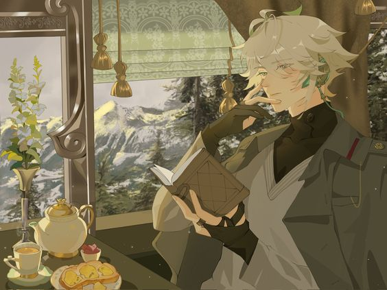

Почему?
Сегодня мне в спотифае попался баннер "итог 2023 года". Мне было очень интересно, потому что я обожаю всякие рубрики вроде итогов и анализов. В прошлом году, как сейчас помню, мы сдавали зимнюю сессию. В ожидании какого-то экзамена сидели в burger king и обсуждали итоги.
Тогда я подумала, что мои результаты мне абсолютно не нравятся. Не потому что они какие-то странные для других, а потому что я слушаю вовсе не то, что хочу.
В этом году я постаралась это исправить.
Итак. Итоги 2023 года!!
Мне очень нравится то, что я вижу. В прошлом году там были песни из плейлистов, которые мне не особо нравились. Сейчас же топ-5 любимых исполлнителей - моя гордость. О каждом я хочу рассказать поподробнее.
Radiohead
Мой определённо любимый исполнитель этого года. Я очень рада, что у нас с папой сходятся вкусы во многих песнях
Топ-5 песен этого года:
1. Jigsaw falling into place
2. Fake plastic trees
3. Exit music
4. Weird fishes
5. Knives out
Ichiko Aoba
Я слушала её когда мне было плохо, когда было грустно. Когда расставание с любимым человеком приносило мне очень много слёз. И когда солнечное утро радовало меня и успокаивало. Она для меня значит слишком много. Её песни - залог моего уюта и комфорта.
Топ-3:
1. 海辺の葬列
2. Asleep Among Endives
3. HORO / Easter Lily - live at Milton Court, London, 2022
Последняя песня - это просто невероятное исполнение вместе с ансамблем. Я даже не знаю, как передать все эмоции, которые я испытала, прослушивая живое исполнение оттуда. Если что, оставлю плейлист внизу, а так же ссылку на Youtube плейлист со всеми композициями!
Mitski
Я не знаю, как описать то, сколько я плакала под её песни. Сколько эдитов пересмотрела в тиктоке, пуская слёзы. Она трогает за душу своими песнями. И перед глазами сразу возникают самые трепетные образы.
1. My love mine all mine
2. I bet on losing dogs
3. Nobody
Aurora
Аврора ассоциируется у меня с человеком, который долгое время сильно нравился мне. В SKY был сезон, посвящённый полностью её музыке. Это было лучшее время для меня и моей души. Мне было очень легко, и очень тяжело одновременно. Зимняя сессия не давала мне расслабиться. Но стоило зайти в SKY, как все тревоги тут же пропадали.
1. The seed
2. Rynaway
3. All is soft inside
4. Warrior
5. Queendom
Мои любимые песни 2023 года
Песня, которая мне больше всего понравилась на концерте авроры в Sky
Должна ли я комментировать как-то набор песен, под которые я плакала?
Когда Настя посоветовала мне эту песню, я так и знала, что она окажется в моём топе года
Любимые в категории other:
Loveless делает настолько ОХУЕННЫЕ каверы, что каждый из них заслуживает внимания!!!
☆Я люблю тебя. Я так рада, что встретила тебя в этом году. Спасибо тебе☆Элли
Я слушаю её так давно, что помню, как сохраняла в далёком 2018 году её песни в ВК. Первая песня, которую я услышала "Тепло наших тел". В своё время она меня очень поразила. Аккомпонемент - фортепиано в большинстве песен, что очень близко мне. Да и как-то так вышло, что год был грустным. Приходилось часто оставаться на едине с собой. И песнями Элли.
1. Немеренно
2. Нерассказанное
3. Рядом
4. Футболка
5. Рядом
Дождь хлестал по щекам, бил ветер стёкла витрин
Но я слышала, как внутри тебя бился хрусталь
Пожалуйста, перестань
Пожалуйста, перестань
И всё в этом мире так странно. С каждым днем тебе всё холодней
Ушедший взглядом в себя, ты прячешься от людей
А память твоя - на сердце якорь
Но только не вздумай плакать
Только не вздумай плакать
А память твоя - на сердце якорь
Но ведь я буду рядом
Даже когда перебьется хрусталь
Когда догорят все краски заката
Пожалуйста, перестань
Ведь я буду рядом